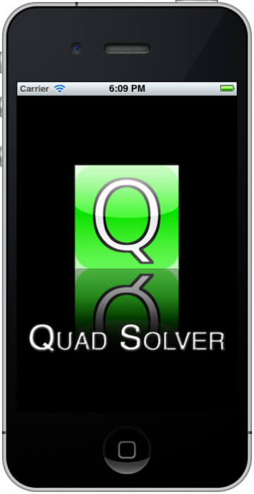

Great news! There’s finally an update to Quad Solver! Quad Solver 1.5 brings mostly small, but welcome updates:

Unfortunately, it is now 99¢ instead of free, but I did that out the the amount of time I have put into the program over the years, and as a college student, well… I need to fund myself some how.
Update: I’ve decided to move it back to free! :)
However, if you already have a current version, the update is free as it always will be! If not, do me a favor, and please head over to the App Store and check it out! Thanks!
cycomachead - version 1.1
So, I’ve gotten around to doing some cleanup I’ve wanted to do for a while. Mobile viewing will be much better now, and things shouldn’t overlap at all on small screens or low resolution displays. I’ve also made minor changes to various other parts of the site. If you would like to add a link to the Home Screen on your iPhone or iPad (or iPod touch too) I’ve now created a special icon for that.
…one more thing:
Comments! I’ve added comments. So, now I guess this is a real bona-fide blog (if there is such a thing). I’d love to hear what you think, and comments should make that much easier. So, please, say hello. :)